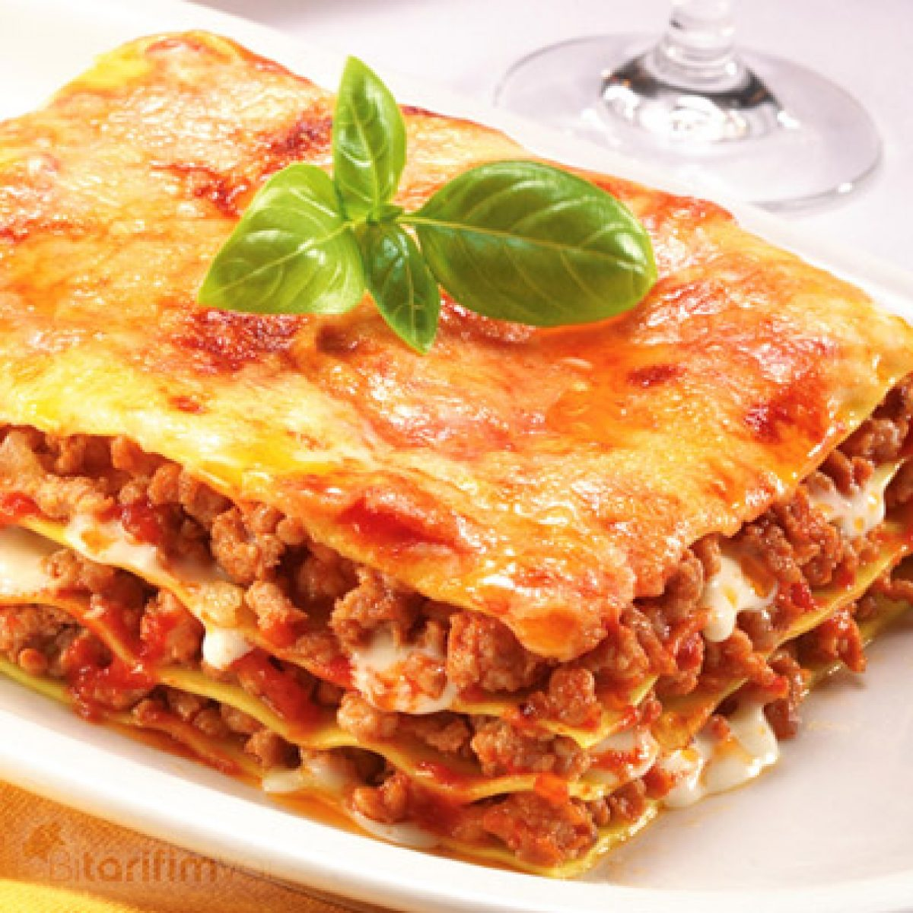
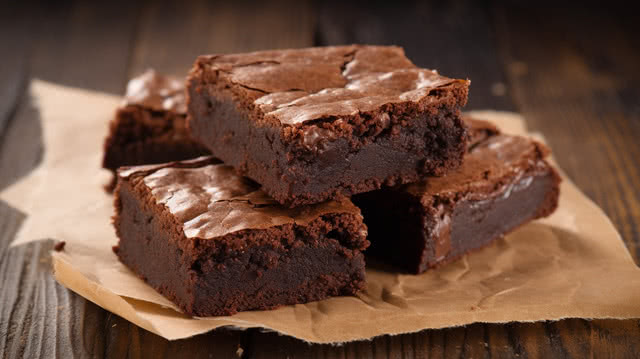

Oven-Baked Vegetable Lasagna
A classic Italian comfort dish made with fresh zucchini, bell peppers, layers of pasta, and a creamy homemade béchamel sauce. Perfect for a cozy family dinner that is both nutritious and filling.

A classic Italian comfort dish made with fresh zucchini, bell peppers, layers of pasta, and a creamy homemade béchamel sauce. Perfect for a cozy family dinner that is both nutritious and filling.

These brownies are rich, intensely chocolatey, and feature a signature crinkly top with a gooey center. They require only a few staple pantry ingredients and can be prepared in under 30 minutes.
